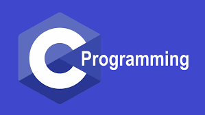

C
Un lenguaje de programación de propósito general que ha sido ampliamente utilizado y ha influido en el diseño de muchos otros lenguajes.
Los lenguajes de programación son conjuntos de reglas y sintaxis que permiten a los programadores escribir código fuente para desarrollar software, scripts o aplicaciones. Estos lenguajes proporcionan un conjunto de instrucciones que se traducen en un código ejecutable que la computadora puede entender y ejecutar.
Un lenguaje de programación de propósito general que ha sido ampliamente utilizado y ha influido en el diseño de muchos otros lenguajes.
Un paradigma de programación es una forma de organizar y escribir el código de un programa. Es como un estilo o una manera de pensar para resolver problemas con la computadora.
Cada paradigma tiene sus propias reglas y métodos para decirle a la computadora qué hacer. Algunos se enfocan en dar instrucciones paso a paso, otros en usar funciones, y algunos en trabajar con objetos.
Se enfoca en describir detalladamente los pasos que el programa debe tomar para alcanzar el estado deseado.
Ejemplos: C, Pascal